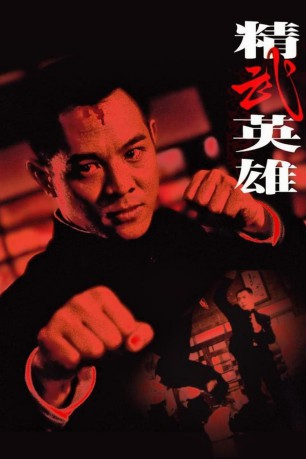

#11053 Fist of Legend
 
 IMDB-Wertung: 7.6 / 10
IMDB-Wertung: 7.6 / 10  Metascore: 0
Metascore: 0 
Shanghai, 1937. Zu Beginn des Sino-japanischen Krieges kehrt Chen Zhen (Jet Li), ein junger chinesischer Student, aus Tokio, wo der Rassismus unerträglich geworden war, zurück zu seiner Martial Arts-Schule. Wieder dort, entdeckt er, dass sein alter Meister in einem unfairen Kampf gegen den Direktor einer rivalisierenden Judo-Schule zu Tode gekommen war. Während seiner Untersuchungen stellt Chen Zhen jedoch fest, dass es sich um einen Mord handelt, ausgeführt in Shanghai von Gô Fujita (Billy Chow), einem japanischen Soldat, unter Mittäterschaft eines der Mitglieder der Schule. Mit Hilfe von Huo Ting-en (Siu-hou Chin), dem Sohn des ermordeten Meisters, seiner kleinen japanischen Freundin und des japanischen Kampfkunstmeisters Fumio Funakoshi (Yasuaki Kurata) versucht er, die rassistischen Vorurteile zu durchbrechen...
Jahr: 1994
Dauer: 97 Minuten
FSK: 18
Land: Hong-Kong Studio: ArteTonspuren:
Untertitel:
Auflösung: 1080p (1920x1040) Größe: 7475 MB
Genre: Action, Thriller, Drama
Regisseur: Gordon Chan
Drehbuch: Gordon Chan, Kwong Kim Yip
Soundtrack: Stephen Edwards, Joseph Koo
Darsteller:
 Jet Li als Chen Zhen
Jet Li als Chen Zhen Siu-Ho Chin als Hou Ting-En
Siu-Ho Chin als Hou Ting-En- Billy Chow als General Fujita (Supreme Killer)
 Yasuaki Kurata als Fuimo Funakoshi
Yasuaki Kurata als Fuimo Funakoshi Paul Chun als Uncle Noh
Paul Chun als Uncle Noh- Ada Choi als Rose
 Cheung-Yan Yuen als Captain Jie
Cheung-Yan Yuen als Captain Jie- Suk-Mui Tam als Wei
- Jackson Lou als Ryuichi Akutagawa
- Sun Wong als Cook
- Man Biu Lee als Biu
 E.E. Bell als
E.E. Bell als - Ray Chang als
- Kwok-Ping Choi als
 Kam Kong Chow als
Kam Kong Chow als  John DeMita als Chen Zhen
John DeMita als Chen Zhen Wayne Grace als
Wayne Grace als  David Graf als
David Graf als - Sam Kai-Sen Huang als
 Karen Huie als
Karen Huie als  Foo-Wai Lam als
Foo-Wai Lam als - Kwok-Kit Lam als Jing Mo Student
- Tat Chiu Lee als Japanese Student
 Mike Leeder als Tournament Referee
Mike Leeder als Tournament Referee- Chi-Hung Ling als Ngai's Student
- Tim Lounibos als
- Siu-Ming Lui als Jing Mo Student
- Gary Wing-Lun Mak als Lun - Jingwu Mun Student
 Derek McGrath als
Derek McGrath als - Dean Scofield als
- Brad Sergi als
 Michael Sorich als
Michael Sorich als  Fred Tatasciore als
Fred Tatasciore als - Chi-Keung Wong als Japanese Student
 Wah Wo Wong als Policeman
Wah Wo Wong als Policeman- Eric Michael Zee als
- Shinobu Nakayama als Mitsuko Yamada
- Toshimichi Takahashi als Japanese Ambassador
- Shaun Britton als English Gentleman at Dock
- Ging-Chi Chan als Japanese Student
- Siu Wah Chan als
- Chi-Chuen Cheung als
- Chun Hung Cheung als Liu Zhensheng
- Yuk Wah Cheung als
- Kwok-Leung Ching als Japanese Student
- Steve Coon als
- Timothy Dang als
- Mary Ellen Dunbar als
- Yung-Chang Ho als Japanese Student
- Harry Johnson als
Datei: X:\FSK18-Eastern\Fist of Legend (1994, FSK18, 1920x1040).mkv seit 24.04.2019
Festplatte: FSK18
 Es gibt insgesamt 102 Filme in der Gruppe 'FSK18-Eastern'
Es gibt insgesamt 102 Filme in der Gruppe 'FSK18-Eastern'